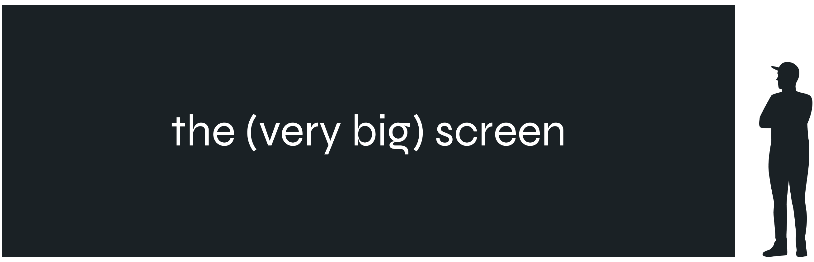
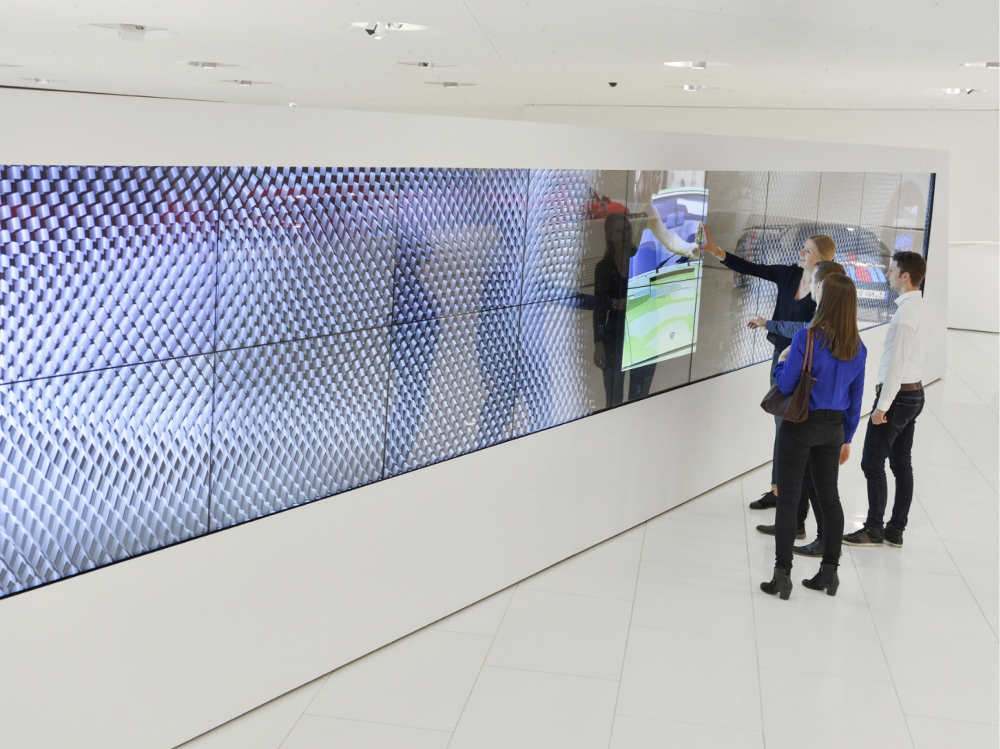
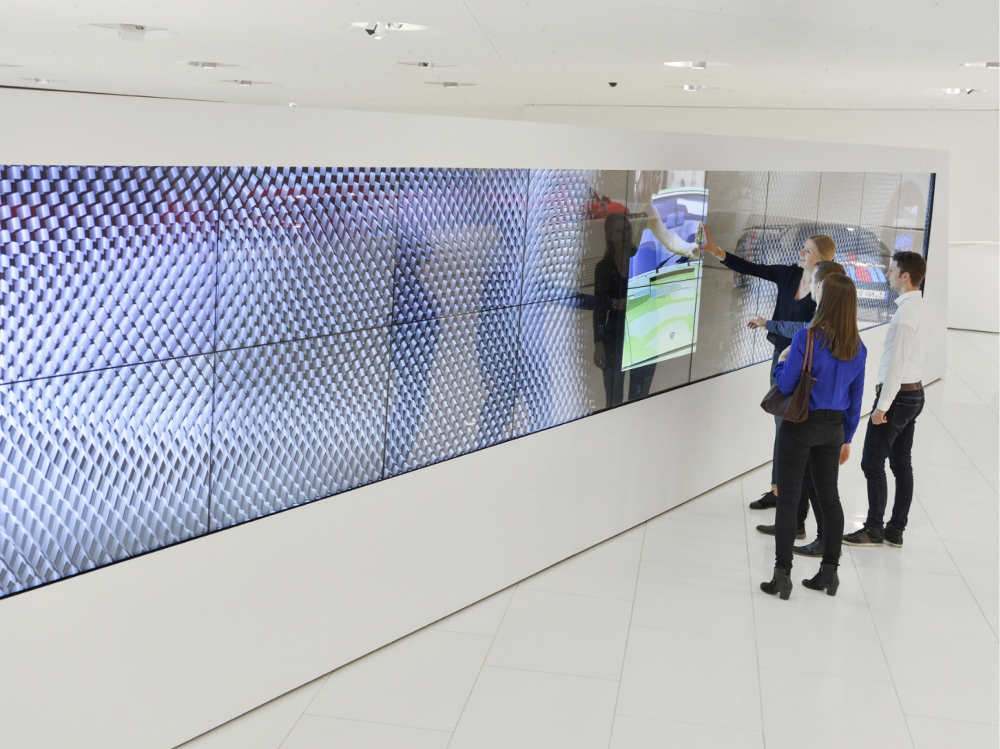

Porsche 911:
An Interactive Archive
Year — Spring 2024
Tools — Blender, Figma, After Effects, Premiere Pro
Synopsis — An immersive, big-screen display that chronologizes all variants of the iconic Porsche 911 throughout history, allowing viewers to scroll through time and interact with each car in pseudo-3D.
DISCLAIMER: All vehicle photos and footage (excluding the 3D model) in this project belong to Porsche.
This project, while for school, was intended to be a passion project: create an interactive experience for a big screen. Any topic.
So I picked the Porsche 911. It's an iconic car, but the history and the many, many variants are a bit convoluted, so I thought: let's make it simple. Put it all in one place. All on one big, big screen.
Go Big or Go Home
I took inspiration from the Porsche Museum in Stuttgart, Germany. As shown below, they have a massive touch-screen exhibit.
But rather than just display the cars on a screen, my idea was to have the cars appear life-sized. Have the screen go floor-to-ceiling; really immerse the user. So naturally, one of my first obstacles was scale. Having cars to-scale made other elements tricky—how big should text be? How far apart should interactive areas be?
After some experimentation, I ended up with a system that puts interactive elements at eye- or chest-level with text large enough to read from an arm's length away. Gesture-based navigation keeps it accessible from any part of the screen, but there is explicit navigation along the left side at all times.

Learning Blender
I had used Cinema4D in classes before, but this time I opted to use Blender. But that meant I had to deal with the steep learning curve that comes with new software—especially new 3D software. I had planned to model every car I included in the final prototypes, but I had to descope to only one model for the sake of time.
I first started by building the topology from my reference pictures, then added symmetry reflectors and subdivision surfaces, and finally worked with custom node materials to create the translucent and glowing holographic effect.
Final Animations
The idle screen displays eye-catching footage (video credit to Porsche) and preview content from the experience.
The story screen allows the user to navigate through the many Porsche 911s, with information about each respective variant's design and story. The sidebar menu provides the user with various ways to navigate through the variants: scroll through time, group by generation, and group by model.
The variant screen displays specifications and features of the selected (sub)variant, with tags on inspectable parts. Tapping a tag opens the inspect screen, which provides more detail and lets users interact with the part in 3D.
Takeaways
3D modeling is a lot of work.
As such, this was one of my first large projects that, despite the affordable timeline, required heavy descoping. I had intended to 3D model every car that was featured, but the steep learning curve of Blender forced a significant change in plans. Still, I'm proud of the 3D that I did complete; especially, the material (with a thousand mix shaders) was a feat.
For a more in depth look at the project development, take a look at the deck!
 
